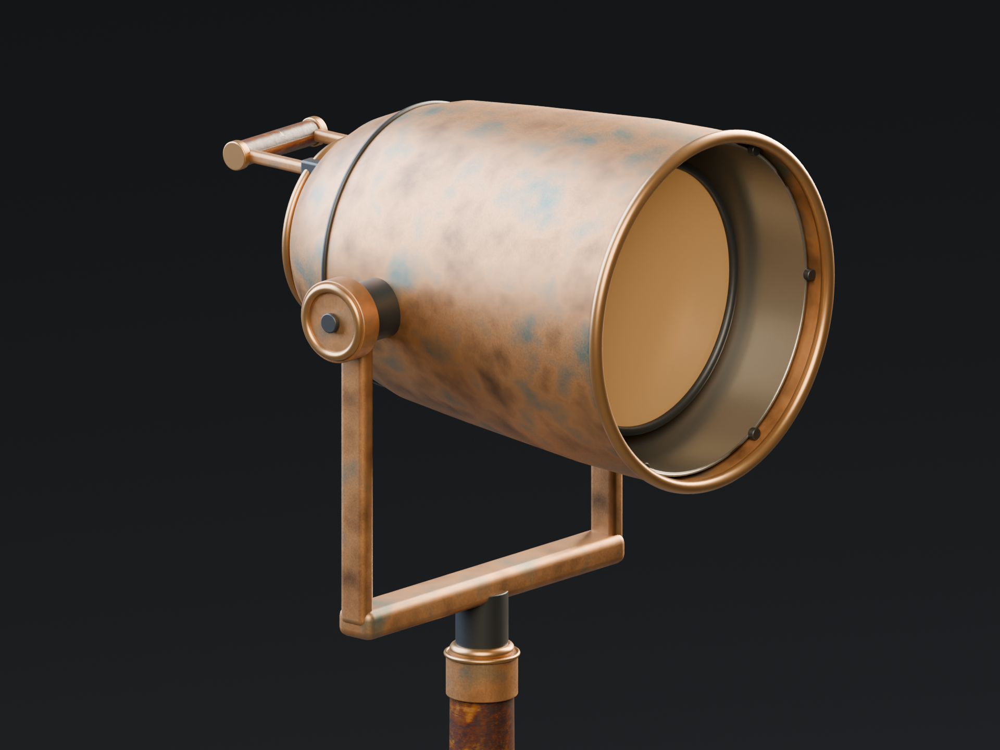

<!doctype html>
<html lang="zh-CN"><meta charset="utf-8"><title>灯具近景 A/B</title>
<style>body{margin:0;background:#151719;color:#e5e2da;font:16px/1.6 system-ui,sans-serif}main{max-width:1440px;margin:auto;padding:24px}h1{font-size:25px}p{color:#aaa}#compare{position:relative;width:100%;aspect-ratio:4/3;overflow:hidden}#compare img{position:absolute;inset:0;width:100%;height:100%;object-fit:contain}#runtime{clip-path:inset(0 0 0 50%)}#line{position:absolute;left:50%;top:0;bottom:0;border-left:2px solid #f0b566}.tags{display:flex;justify-content:space-between;margin:12px 0}input{width:100%;accent-color:#d9a162}footer{margin:18px 0;color:#888}</style>
<main><h1>《灯影山海》灯具近景 A/B</h1><p>同机位、同灯光、同曝光。完整源 93,712 tris；解析重采样变体 33,104 tris。此页面比较源渲染，不表示 UE 已通过。</p><div class="tags"><span>A：完整源</span><span>B：运行时变体</span></div><div id="compare"><div id="line"></div></div><input id="slider" type="range" min="0" max="100" value="50" aria-label="A/B叠加分割位置"><footer>前口大环80×12；圆罩周向64；小环48×8；倒角3段。未使用 Decimate，完整源保持不变。</footer></main><script>const slider=document.getElementById('slider');slider.addEventListener('input',()=>{document.getElementById('runtime').style.clipPath=`inset(0 0 0 ${slider.value}%)`;document.getElementById('line').style.left=slider.value+'%';});</script></html>
